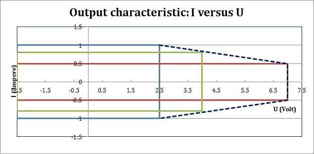
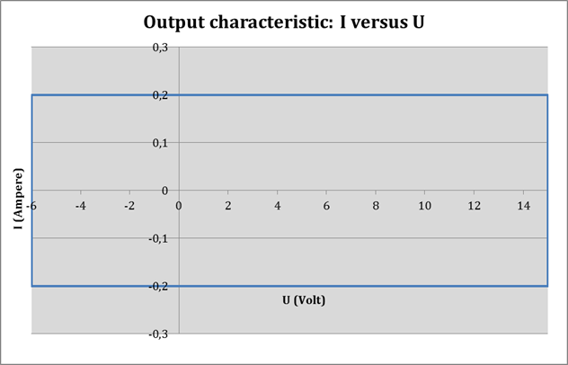
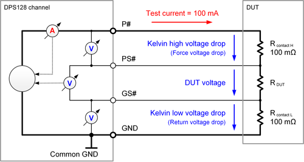

DPS128 / DPS64 functionality and features
The DPS128 and the DPS64 cards are members of the family of DC Scale power supplies and can reside in any I/O channel card slot.
The following sections are available in this topic:
Variants
| DPS128‑HC | E8023CS | 128 HC channels | 1.0 A | -2.5 V ... +7.0 V |
| DPS64‑HC | E8023CSH | 64 HC channels | 1.0 A | -2.5 V ... +7.0 V |
Depending on the variant, the cards support various pogo cables. For details see DPS128 / DPS64 pogo cable assemblies and pogo pin assignments.
- Current and voltage capability of HC channels
-

The graphic above shows the high current power diagram of the DPS128/DPS64. The programmed voltage determines the maximum current. If, for example, 7 V is programmed, the maximum current is 0.5 A. If 2.5 V is programmed, the maximum current is 1 A for all voltages below 2.5 V.
- Current and voltage capability of HV channels
-

The graphic above shows the high voltage power diagram of the DPS128.
For the maximum source/sink current per card see the DPS128 / DPS64 specifications.
Functionality
Each of the 128 or 64 channels of a DC Scale DPS128/DPS64 cards can:
- source and sink current at a programmed voltage,
- measure the voltages and currents supplied,
- supply power to external circuits on a DUT board,
- be programmed in a test suite for a certain test,
- be shared between different sites (channel sharing),
- be ganged to increase the supply current,
- do connectivity checks,
- check the status of the device power supply.
Operating modes
DC Scale DPS128/DPS64 cards have two operating modes:
- DPS operating mode (DPS+)
In DPS operating mode you can use DC Scale DPS128/DPS64 cards like a standard DPS, to supply devices with power during the execution of a testflow.
- PMU operating mode
(SIG)
In PMU operating mode you can use DC Scale DPS128/DPS64 cards like a standard PMU to temporarily supply power for a single test suite or for a group of test suites.
In both operating modes each of the 128 or 64 channels of every power supply card can
- source and sink current at a programmed voltage,
- measure the voltages and currents supplied,
- supply power to external circuits on a DUT board,
- be programmed in a test suite for a certain test,
- be shared between different sites (channel sharing),
- be ganged to increase the supply current,
- do connectivity checks,
- check the status of the device power supply.
The DPS operating mode is a superset of the PMU operating mode and has some additional capabilities. Only in DPS operating mode the DC Scale power supply cards can
- take part in connect and disconnect sequences, and
- take part in the set activation.
For further details see DPS128 / DPS64 in DPS operating mode and DPS128 / DPS64 in PMU operating mode.
Clamping and forcing current
- 20 % of the selected current range for the HC variant, and
- 10 % of the selected current range for the HV variant.
In the current force mode, the DPS128 applies a positive or negative voltage depending on the sign of the programmed force current and uses the clamp current functionality to limit the actual current to the target current. The minimum clamping current mentioned above therefore also applies to the forced minimum current.
If necessary, SmarTest automatically adjusts the clamp current settings to the minimum value as defined in the current specifications and displays the following warning in the UI report window:
Clamp current limit is smaller than minimum value and will be auto-corrected.
Measurement modes
DC Scale DPS128/DPS64 cards support voltage and current measurements in both the DPS and PMU operating modes.
For measurements in DPS operating mode see Measuring current or voltage in DPS operating mode.
For measurements in DPS mode, ganged channels must be sequentially unganged starting from the last channel and reconnected after measurement.
For measurements in PMU operating mode see Measuring current or voltage in PMU operating mode. These are:
- current measurements
- unganged current measurements
- voltage measurement
- high-impedance voltage measure mode
The PMU operating mode is used to test PMIC (power management integrated circuit) regulator outputs, mostly sequentially, and requires connect/disconnect per measurement. The impact of relay settling times is significant.
Minimum capacitance requirements
The minimum required capacitance is 1 nF to 10 nF close to the pogo pin location. This applies to both the DPS128-HC and the DPS128-HV. For further details see DPS128 / DPS64 capacitor requirements.
An external load capacity results in improved DPS stability, in reduced oscillations, and in reduced noise. When operating in DPS mode, DPS128/DPS64 cards generally require a load capacity. The requirements differ for HC and HV channels:
- for high current (HC) channels: 1 μF to 100 μF
- for high voltage (HV) channels: 100 nF to 4.7 μF
If you make use of the DUT interface of the Twinning solution, the capacitance shall be placed both on the family board and the DUT daughter board observing the rules of this section. The capacity figure in terms of Farad for the capacitors shall be the same as given above for the DUT board, both for the capacitor of the family board, and the DUT daughter board.
See also the technical specifications for , and the electrical design rules for the DPS128/DPS64.
Profiling in Hardware view
Profiling (DC profiling) allows you to measure and display current and voltage waveforms during pattern execution in the Hardware perspective. Current and voltage profiling is supported for all channels, both in DPS mode and in PMU mode.
On DC Scale DPS128/64 and UHC4T cards, profiling for multiport setups does not stop when the DPS part is finished. On these cards, profiling stops when the longest running port is finished. This gives the capability to profile the supply voltages/currents during the complete execution. In case you want to reduce memory consumption, you could put DPS pins into an empty port.
For the DC Scale DPS128/DPS64 cards, changing the current measurement range for profiling is not supported. That is, the measureRange parameter of the DC_PROFILING_DEFINE and DC_PROFILING_ON APIs is ignored when the measureType parameter is set to TM::CURRENT. The profiling measurements are performed in the selected clamp current range.
The profiling sample rate is up to 100 ksps for up to 16 channels. To achieve this rate, the channels must be distributed over 16 pin groups, where each pin group consists of 8 pins (1-8, 9-16, 17-24, ..., 113-128).
In case of more than one channel per pin group, the profiling sample rate is 50 ksps. See also DPS128/DPS64 specifications.
Note that the DPS128/DPS64, when starting the sequencer with the SQST RUN firmware command or with the SEQUENCER_STATUS run() test method, cannot execute dynamic and static DC actions in parallel. Use profiling for measurements in parallel to a dynamic pattern.
Comparators
Each HC channel of the DC Scale DPS128/DPS64 card features a pair of two high-bandwidth comparators connected to the sense lines. They work similarly to digital comparators and can therefore be used similarly as a digital output channel (for example for match loops).
The comparators are supported both in DPS operating mode and in PMU operating mode.
They can be connected to the voltage sensor (Vsense) or the current sensor (Isense), which monitor the voltage on the sense line or the output current of the channel. See also the DPS128 / DPS64 hardware overview.
In voltage compare mode the DC accuracy is around ±10 mV (typical) with a minimum detectable pulse width of 1 μs.
In current compare mode the DC accuracy is ±10 % (typical) of the selected current range with a minimum detectable pulse width in dependency to the range. It is 1 μs for the highest range (1 A) and scaling by factor 10 for each 2nd range going from the highest to lower ranges (i.e. 200 mA, 25 mA, 2.5 mA, ...).
Comparators are addressed via special operation modes controlled by the DPS_AUX_TASK test method API.
Note that on DPS128/64 and XPS256 you cannot execute a current compare on a ganged group of channels in unganged mode. Already activated comparators are silently disabled in unganged mode. A user notification (Error or warning) is omitted in this case, to avoid any interrupt in the testflow. The previous state of the comparators is automatically restored after the ganged group has been restored.
Surge tracker
The surge tracker monitors the voltage via sense lines or the output current. It is implemented on the comparator pair of the DPS128/DPS64.
Once the surge tracker is turned on, it monitors unless being turned off. Connect or disconnect sequences do not reset it. In a typical use scenario you activate the surge tracker in the very beginning of a testflow and check the status at the end of it.
Voltage or current surges are detected against min. and max. values. The surge tracker always checks against both high (positive) and low (negative) thresholds, which can be set individually. Two flags indicate if the high and low thresholds have been exceeded. These flags are latched (stored) and can be retrieved any time in the testflow.
For technical specifications see Voltage compare mode and Current compare mode under Surge tracker in DC Scale DPS128 Device Power Supply (E8023CS/E8023CSH) - high current specifications.
- Related TM APIs:
Current force and measure ranges
The DPS128/DPS64 current force and measure ranges are linked. The required down-ranging before a measurement and up-ranging after the measurement has an impact on test times, both in DPS mode and in PMU mode. See also DPS128 / DPS64 specific setup tasks.
Automatic down-ranging
DPS128/DPS64 channels feature automatic down-ranging for current measurements.
Automatic down-ranging means that the current range is automatically changed to the best fit range for the measurement and restored to the original range after the measurement.
- The force current or clamp current range:
- Can be set explicitly or (if not defined)
- is automatically derived from the forced or clamped value.
- The current measurement range:
- Can be set explicitly or (if not defined)
- is automatically derived from the pass/fail thresholds.
Automatic down-ranging is supported for both code‑based programming using the SPMU_TASK and DPS_TASK test method APIs and the pattern‑based programming using the DC events and is also supported by SmartRDI.
Ganging channels
To achieve a higher output current, you can operate multiple channels of DC Scale DPS128/DPS64 cards in parallel, known as ganging. Ganging is the combining of multiple DPS channels to provide a higher current than a single DPS channel could provide.
The actual ganging, that is the physical parallel connection, is done on the DUT board. For details see Connecting DPS channels in parallel.
To set up a DPS128/DPS64 channel gang you use the Pin configuration tool.
- You can gang any number of successive channels of the same type within a DPS128/DPS64 card. Ganged channels must be located on the same card. You cannot gang across DPS128/DPS64 cards.
- You can configure these successive channels in up to 64 gang groups in a DPS128, and 32 gang groups in a DPS64.
For details on the setup procedure see Defining DC Scale Pins.
For the firmware commands see DFPS, DFPS? - (DeFine Power Supply) for ganging in DPS operating mode and DFPN, DFPN? - (DeFine Pin Name) for ganging in PMU operating mode.
Each gang group consists of a master channel and one or more slave channels. The master channel distributes two analog signals to the slave channels. One signal is the target voltage on the output, and the second is a voltage that represents the current of the master. The slave channels will adjust their own voltage to match the current of the master channel.
Ganging supplies higher currents to a device. To avoid a negative impact on measure-current accuracy, for example for IDD-measurements, you can temporarily ungang channels during measurement. The unganging process differs for the DPS and PMU operating modes. For details see Measuring current or voltage in DPS operating mode and Measuring current or voltage in PMU operating mode.
For measurements in DPS mode, channels must be sequentially unganged starting from the last channel and reconnected after measurement.
Channel sharing
You can share the same DC Scale channel between several sites.
This allows you to save DPS channels and to supply external circuits on the DUT board.
See also Test Method Programs and Sharing Channels Between Several Sites.
Software identifier
The software identifier applies to parameter type in the DPS section of the model file. For more information, refer also to DPS128 and DPS64 card configuration in the model file in DPS128 and DPS64 pogo cabling and model file configuration.
DCS‑DPS128HC |
Note that this is the software identifier for the high current (HC) channels of both the DC Scale DPS128 and the half populated DPS64. To decide, which of the two cards is actually installed in a test head, check the number of pogo block entries in the POGOCABLING section of the model file and the pogo assembly subtype (See DPS128 / DPS64 pogo cable assemblies and pogo pin assignments and DPS128 and DPS64 pogo cabling and model file configuration). |
Licensing
The device power supply cards DC Scale DPS128 and DC Scale DPS64 require no license.
Sense connection test
The DPS128 channels feature a sense connection test unit, which is also know as Kelvin test unit.
Kelvin test or sense connection test means that the connection from the force lines to the sense lines on the DUT board or at the DUT pins is verified with a small test current applied. A PASS/FAIL result is returned.
The Kelvin test unit is available in the PMU operating mode and in the DPS operating mode.
The Kelvin test unit applies a small test current to the tested force to sense (FS) connection and measures the voltage drop between the two lines. The measured voltage is used as criterion for the pass/fail decision and should be near 0.0 V for a good FS connection. The Kelvin test unit of a DPS128 supports the test of the P# to PS# connection and the test of the GS# to common GND connection.
| PS# pin | GS# pin | ||
| Threshold for the pass/fail decision: | 3.4 kΩ (typ.) | 20 kΩ (typ.) | |
| Test current: | 44 μA (typ.) | 50 μA (typ.) |
The purpose of the Kelvin test unit is to ensure that when the DUT is contacted, the high-impedance sense line is connected to the force line at the DUT with a sufficiently low contact resistance. Due to the high input impedance of the sense lines, the fixed threshold of some kilo-Ohms will be sufficiently low.
The Kelvin test unit is the only resource that can perform a reliable sense connection test with a defined test current applied.
Since connections and hardware on the DUT board can sabotage the test of the sense connections, we recommend that you check the functionality of the test without DUT and with open sense connections. All tested sense connections must fail in this verification.
The purpose of the Kelvin test unit is not to check the low impedance force connections. For the DPS128-HC variant, force connections can be checked by the Voltage drop measurement in combination with a high test current forced by the PMU. This force connection test requires that the contact resistance of the sense lines already has been verified.
Attention: An inadequate sense line connection does not necessarily mean that a voltage drop test fails. The input bias current of the line may falsify the measurement and mask another fatal error like a high voltage drop on the force line.
For information on how to program a sense connection test, refer to functions checkKelvinStatusParallel() and HW_STATE.checkKelvinStatus() of class HW_STATE.
Voltage drop measurement
The HC variant of the DPS128 features a voltage drop measurement unit, which is also known as Kelvin measurement unit.
Voltage drop measurement means that the voltage drop on the force lines can be measured during high current tests.
The voltage drop measurement unit of the HC variant allows you measuring the voltage drop on the P# line and on the GND line. Measuring the voltage drop ensures that the force connections to the DUT have a sufficiently low resistance for the programmed current. It also ensures that there is enough voltage headroom left for proper work of the power stage.
The following drawing shows an example of an optional voltage drop measurement that is carried out in preparation for a subsequent high current test. The programmed test current of 100 mA will not damage the probes in case the contact resistance exceeds the assumed value of 100 mΩ but is sufficient for an accurate measurement.

For information on how to use the voltage drop measurement unit, refer to function SPMU_PIN_TASK.connectState() of class SPMU_TASK and to function measurementMode() of class DPS_PIN_TASK. In SmartRDI, the voltage drop measurement is set up by functions vMeasForceDrop() and vMeasReturnDrop().
Functional changes
- Introduced in SmarTest 7.2.1
- SmarTest 7.2.2: Support of DPS128-HC/HV and DPS128-HV
- SmarTest 7.6.0: Kelvin measurement / force drop measurement of DPS128-HC